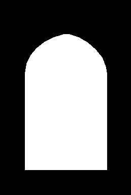

Rejected raw proposal. No composite or production change.

Hold Reference 17. Review the failure before a separately bounded hanging-curtain successor. No automatic reroll, full-scene generation or production change. Display scaling does not alter the preserved PNG files.